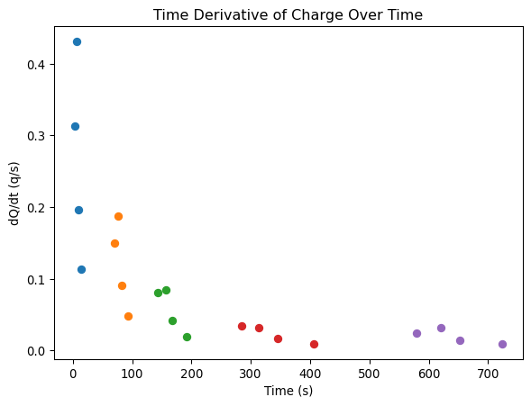
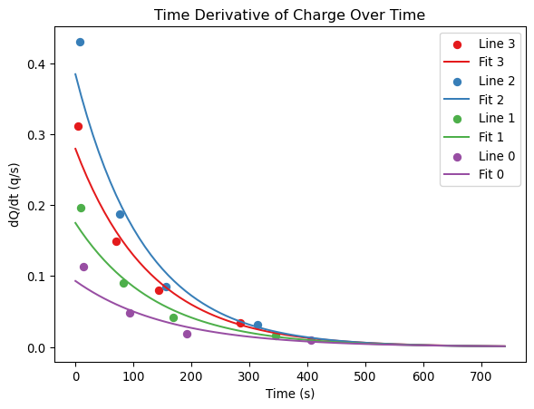

import pandas as pd
import numpy as np
import matplotlib.pyplot as plt
from scipy.optimize import curve_fitLab 4a Radon
Import libraries
Read the data
data = pd.read_csv("data.csv")add time to each datapoint
timestamps = np.array([np.append(data.iloc[i][5], data.iloc[i].to_numpy()[1:5] + data.iloc[i].to_numpy()[5]) for i in range(5)])
timestamps/tmp/ipykernel_25401/3428139913.py:1: FutureWarning:
Series.__getitem__ treating keys as positions is deprecated. In a future version, integer keys will always be treated as labels (consistent with DataFrame behavior). To access a value by position, use `ser.iloc[pos]`
array([[ 3.69, 6.89, 9.21, 14.31, 23.17],
[ 69.82, 76.53, 81.87, 92.93, 113.74],
[143.96, 156.42, 168.24, 192.57, 245.38],
[284.19, 313.41, 344.94, 405.37, 515.38],
[579.58, 620.45, 651.98, 723.18, 833.27]])calculate dN/dt
dt = list(timestamps[:, 1:] - timestamps[:, :-1])
dNdt = np.array([[1/dt[i][j] for j in range (4)] for i in range(5)])
dNdtarray([[0.3125 , 0.43103448, 0.19607843, 0.11286682],
[0.1490313 , 0.18726592, 0.09041591, 0.04805382],
[0.08025682, 0.08460237, 0.04110152, 0.01893581],
[0.03422313, 0.03171583, 0.01654807, 0.00909008],
[0.02446782, 0.03171583, 0.01404494, 0.00908348]])plot dN/dt per trial
\[ \frac{d N}{d t} = k N = kN_0 e^{k t} \implies \ln(\frac{d N}{d t}) = \ln(kN_0 e^{k t}) = \ln(kN_0) + k t \]
plt.figure()
plt.title("Time Derivative of Charge Over Time")
plt.xlabel("Time (s)")
plt.ylabel("dQ/dt (q/s)")
for i in range(len(dNdt)):
plt.scatter(timestamps[i][:-1], dNdt[i])
plt.show()
We realised here that we did the experiment wrong and needed to measure the change in charge on one line specifically. So now we have 4 linear datasets (spread out over 4 trials) to plot and fit. We took some more data after the fact to get enough but it ended up skewing our results a lot probably due to the long wait time and minimal radon, so we will ommit it
dNdt = dNdt[:-1].T
timestamps = timestamps.TNow we can plot and fit the data
fits = []
cmap = plt.get_cmap("Set1")
plt.figure()
plt.title("Time Derivative of Charge Over Time")
plt.xlabel("Time (s)")
plt.ylabel("dQ/dt (q/s)")
for i in range(len(dNdt)):
X = timestamps[i][:-1]
Y = dNdt[i]
w, e = np.polyfit(X, np.log(Y), 1, cov=True)
e = np.sqrt(np.diag(e))
fits.append((
(w[0],e[0]),
(w[1],e[1])
))
plt.scatter(X,Y, color=cmap(i), label=f"Line {3-i}")
X = np.arange(0, 750, 10)
plt.plot(X, np.exp(w[0]*X + w[1]), color=cmap(i), label=f"Fit {3-i}")
plt.legend()
plt.show()
We can see the fits are roughly exponential, and this is the best we can get
for i, fit in enumerate(fits):
m = fit[0]
b = fit[1]
print(f"{i}:")
print(f" m: {m[0]:.4f}+-{m[1]:.4f}")
print(f" b: {b[0]:.4f}+-{b[1]:.4f}")0:
m: -0.0077+-0.0008
b: -1.2737+-0.1298
1:
m: -0.0084+-0.0010
b: -0.9544+-0.1704
2:
m: -0.0072+-0.0009
b: -1.7427+-0.1832
3:
m: -0.0062+-0.0013
b: -2.3736+-0.2927After exponentiation our linear fit transforms from
\[ \ln(y) = mx + b \rightarrow y = e^{mx+b} = e^b \cdot e^{mx} = y_{0} \cdot e^{kx} \]
only \(y_0\) needs to be recalculated, whereas \(m\) can stay the same
Therefore we get
for i, fit in enumerate(fits):
k = fit[0]
y0 = np.exp(fit[1])
print(f"{i}:")
print(f" k: {k[0]:.4f}+-{k[1]:.4f}")
print(f" y_0: {y0[0]:.4f}+-{y0[1]:.4f}")0:
k: -0.0077+-0.0008
y_0: 0.2798+-1.1386
1:
k: -0.0084+-0.0010
y_0: 0.3851+-1.1857
2:
k: -0.0072+-0.0009
y_0: 0.1751+-1.2011
3:
k: -0.0062+-0.0013
y_0: 0.0931+-1.3400\[ x_\text{combined} = \frac{\Sigma x_i/\sigma_i}{\Sigma 1/\sigma_i}, \sigma_\text{combined} = \frac{1}{\Sigma 1/\sigma_i} \]
fits = np.array(fits)
slopes = fits[:, 0]
ints = fits[:, 1]
m_tot = [0, (1/slopes[:, 1]).sum()]
m_tot[0] = (slopes[:, 0]/slopes[:, 1]).sum()/m_tot[1]
print(f"m: {m_tot[0]:.4f}+-{m_tot[1]:.4f}")
b_tot = [0, (1/ints[:, 1]).sum()]
b_tot[0] = (ints[:, 0]/ints[:, 1]).sum()/m_tot[1]
print(f"b: {b_tot[0]:.4f}+-{b_tot[1]:.4f}")m: -0.0075+-4163.1682
b: -0.0079+-22.4474to get the exponentiated values, we need not do anything to the slope but instead exponentiate the intercept to get
\[ y_0 = e^b \]
and the error is then \[ \sigma_{y_0} = \sigma_b \cdot \frac{\partial y_0}{\partial b} = \sigma_b \cdot e^b = \sigma_b \cdot y_0 \]
y0_tot = [np.exp(b_tot[0]), b_tot[1]]
y0_tot[1] = y0_tot[1]*y0_tot[0]
print(f"k_exp: {-np.log(2)/55}")
print(f"k: {m_tot[0]:.4f}+-{m_tot[1]:.4f}")
print(f"b_exp: {1}")
print(f"b: {y0_tot[0]:.4f}+-{y0_tot[1]:.4f}")k_exp: -0.012602676010180823
k: -0.0075+-4163.1682
b_exp: 1
b: 0.9921+-22.2700due to the small number of trials and large error from using multiple ticks in the experiment incorrectly we have an insane ammount of error but regarless our values do agree with the theoretical values. Then we get that our half life is approximately
half_life = -np.log(2)/m_tot[0]
half_life_err = -half_life * m_tot[1]/m_tot[0]
print(f"half life: {half_life:.4f}+-{half_life_err:.4e}")
print(f"%err: {half_life_err*100/half_life}")half life: 92.8639+-5.1796e+07
%err: 55775764.1165649Individual fit half lives
for i, fit in enumerate(fits):
k = fit[0]
half_life = -np.log(2)/k[0]
half_life_err = -half_life * k[1]/k[0]
print(f"{i}:")
print(f" k: {k[0]:.4f}+-{k[1]:.4f}")
print(f" half life: {half_life:.4f}+-{half_life_err:.4f}")0:
k: -0.0077+-0.0008
half life: 89.8697+-9.2763
1:
k: -0.0084+-0.0010
half life: 83.0044+-9.4440
2:
k: -0.0072+-0.0009
half life: 96.1711+-12.4560
3:
k: -0.0062+-0.0013
half life: 111.3477+-22.8350